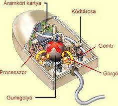
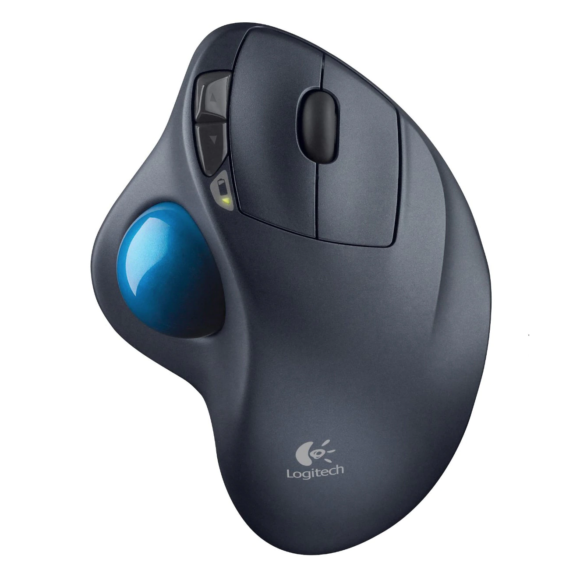
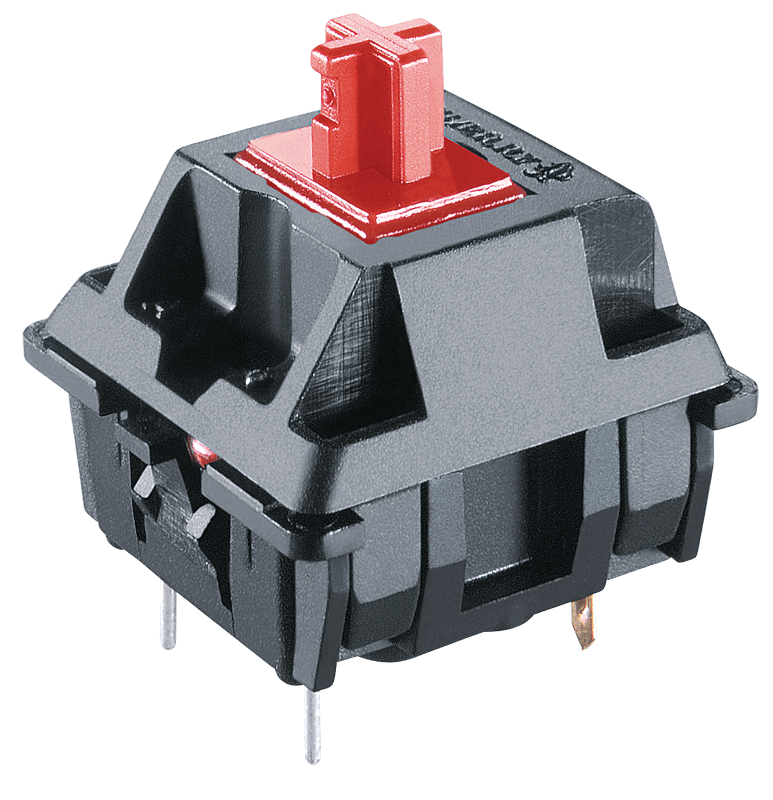

Az egymásra merőlegesen elhelyezett 2 hengerek helyén tartják a golyót, és továbbítják a mozgását a 3 fényáteresztő résekkel rendelkező korongoknak.
Az optocsatolók 4 jelű infravörös LEDjei átvilágítanak a hozzájuk tartozó korongok résein.
Bármely korong elfordulásakor a rajta lévő rések átengedik a hozzá tartozó 4 LED fényét, míg a rések közötti fogak nem. Végeredményben az egér elmozdulása fényimpulzusok sorozatává változik, mégpedig annál több fényimpulzus keletkezik, minél nagyobb az egér által megtett út. A mechanikus egerek által még feldolgozható legkisebb elmozdulás értéke 1/200-ad inch, ami 0,127 mm-nek felel meg.[1]
Az optocsatolók 5 jelű fényérzékeny szenzorai érzékelik a fényimpulzusokat és elektromos jelekké alakítják.
Az elektromos jeleket a képen nem jelölt elektronika dolgozza fel és továbbítja a számítógép felé. Ugyancsak ez az elektronika dolgozza fel az egérgombok lenyomását, továbbá soros vonali kommunikáció esetén ez az áramkör állítja elő az egér tápfeszültségét is a gép által küldött kommunikációs jelekből.

Optikai egerek:
Egy másik fejlesztési vonalon az optikai egér a mozgásokat egy optikai szenzor segítségével ismerte fel, mely egy fénykibocsátó diódát használt a megvilágításhoz. Az első optikai egerek a Mouse Systems Corporationnél dolgozó Steve Kirsch-től erednek, ezeket még csak egy speciális fémes egérpadon lehetett használni, melyre kék és szürke vonalak hálója volt felfestve. Miután a számítógépes eszközök egyre olcsóbbak lettek, lehetőség nyílt egy sokkal pontosabb képelemző chip beépítésére is az egérbe, melynek segítségével az egér mozgását már szinte bármilyen felületen érzékelni lehetett, így többé nem volt szükség speciális egérpadra. Ez a fejlesztés megnyitotta a lehetőséget az optikai egerek elterjedése előtt.
A modern optikai egerek egy reflexszenzor segítségével sorozatos képeket készítenek az egér alatti területről. A képek közötti eltérést egy képelemző chip dolgozza fel, és az eredményt a két tengelyhez viszonyított elmozdulássá alakítja. Például az Agilent Technologies ADNS-2610 optikai szenzora[2] másodpercenként 1512 képet elemez; mindegyik kép 18×18 pixeles, és minden pixel 64 szürkeárnyalatot tartalmazhat.
Az optikai egér előnye a mechanikussal szemben a nagyobb pontosság, kevesebb alkatrész és a koszolódás kiküszöbölése
Trackball
Mechanikus kivitelben itt is a fő alkotóelem a golyó, mely a mechanikai elmozdulást adja át a két görgőnek. Ezek végén tárcsa található, melynek nyílásai egy optikai adó és vevő előtt haladnak el. Ez a kimenetén egy impulzussal jelzi, hogy egy rés haladt el előtte. Ha két-két ilyen kapunk van, akkor segítségükkel meg tudjuk határozni a mozgatás irányát és sebességét.
Optikai kivitelben a golyó felülete felel meg a normál optikai egér által nézett alátétnek. A mellékelt képre kattintva már jól látható, hogy a golyón olyan minta van, amely segíti az elfordulás jobb leolvasását.

Billentyűzetek:
Mechanikus billentyűzetek:
A minden egyes billentyű alatt található külön kapcsoló akár 50 millió leütést is kibír, és egyenként cserélhető. Gépeléskor minden leütés után érezhető és hallható visszajelzést kapunk, hogy az adott gomb lenyomása végbement. Ez előny a „lágy” lenyomású billentyűzethez képest, ahol visszajelzés gyakorlatilag nincs az egyes gombok lenyomásáról.

Membrános billentyűzetek:
A billentyűzetek elektronikus érzékelőrendszere fölött kétféle mechanikus rendszer mozgathatja a gombokat. Egyszerűsége és olcsósága miatt a membrános az elterjedtebb, ennél hordozórétegbe rendezett, rugalmas gumibuborékok mozgatják a gombokat. Az eljárás hátránya, hogy minden gomb kissé más nyomáserőt igényel, idővel pedig változik az anyag rugalmassága; élettartama durván egymillió leütés gombonként.A membrános billentyűzetek továbbfejlesztett változata található a notebookokban. Itt a rugalmas gumi mozgását két műanyag elemből álló, úgynevezett ollós szerkezet segíti, így a lenyomási erő egyenletesebbé válik, a gombok élettartama pedig megnő.